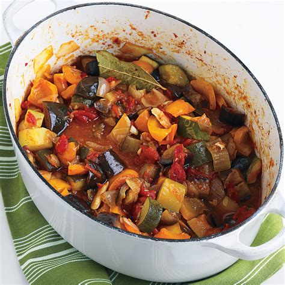

Ratatouille

Description
Ingredient (4 serving)
- 4 tomatoes
- 2 courgettes
- 2 aubergines
- red pepper
- green pepper
- 2 onions
- 4 garlic cloves
- 5cl of olive oil
- salt and pepper
Steps
- Cut each of your vegetables in cube
- Saute each of your vegetables with olive oil and put them in a pot
- Simmer for 30 to 40 min